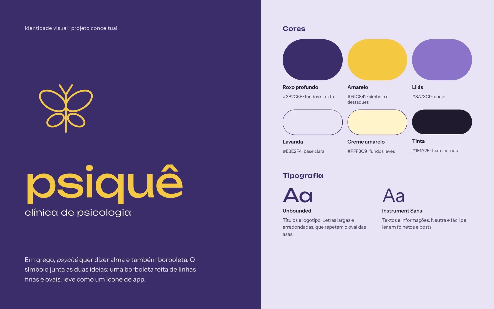
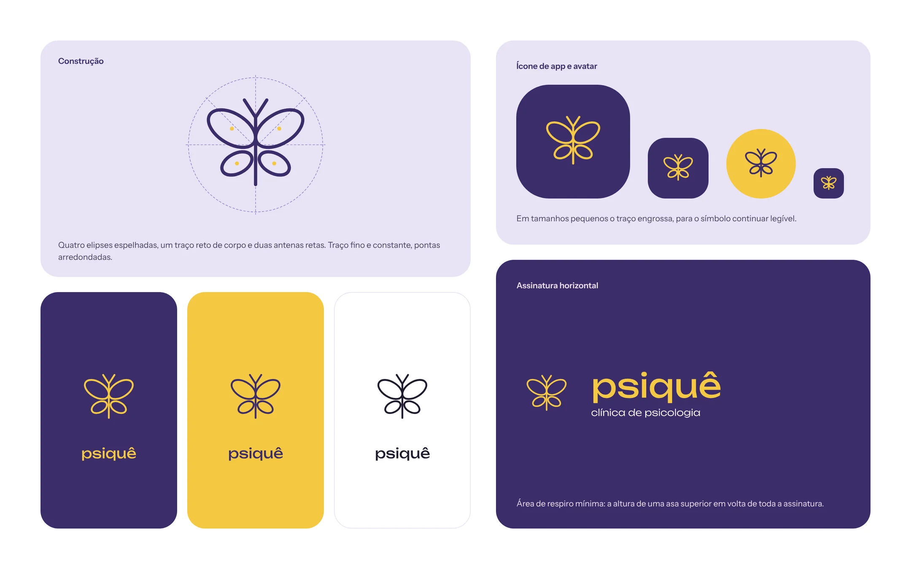
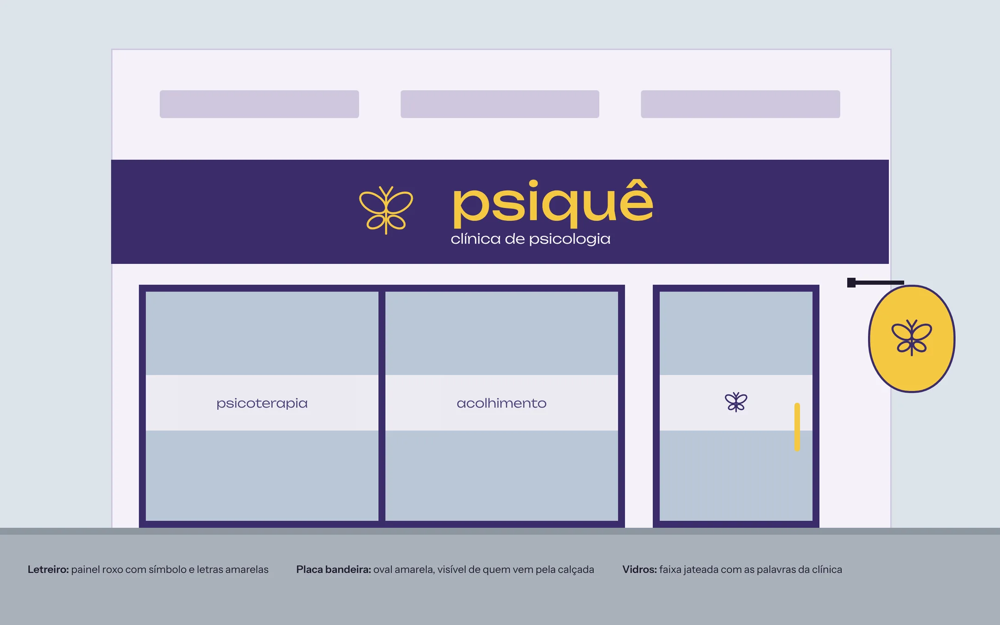
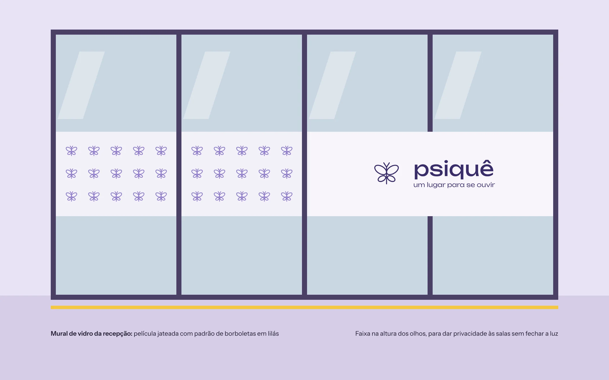
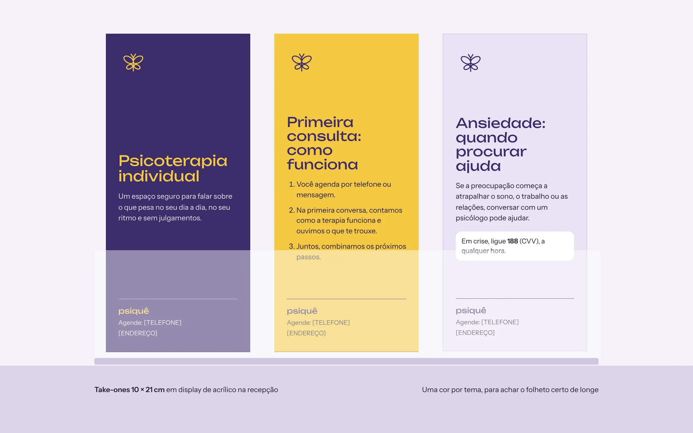
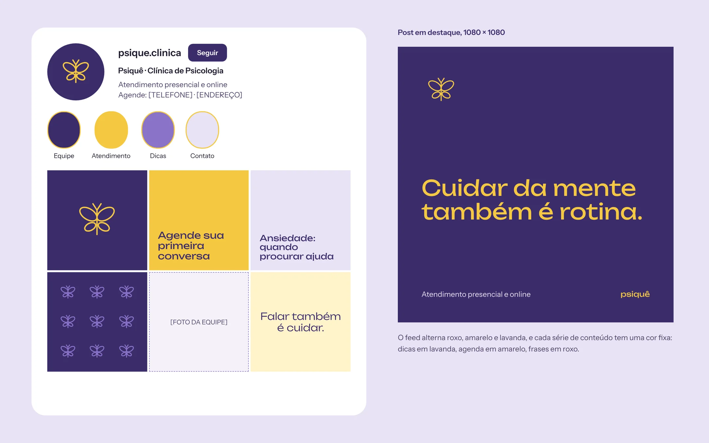
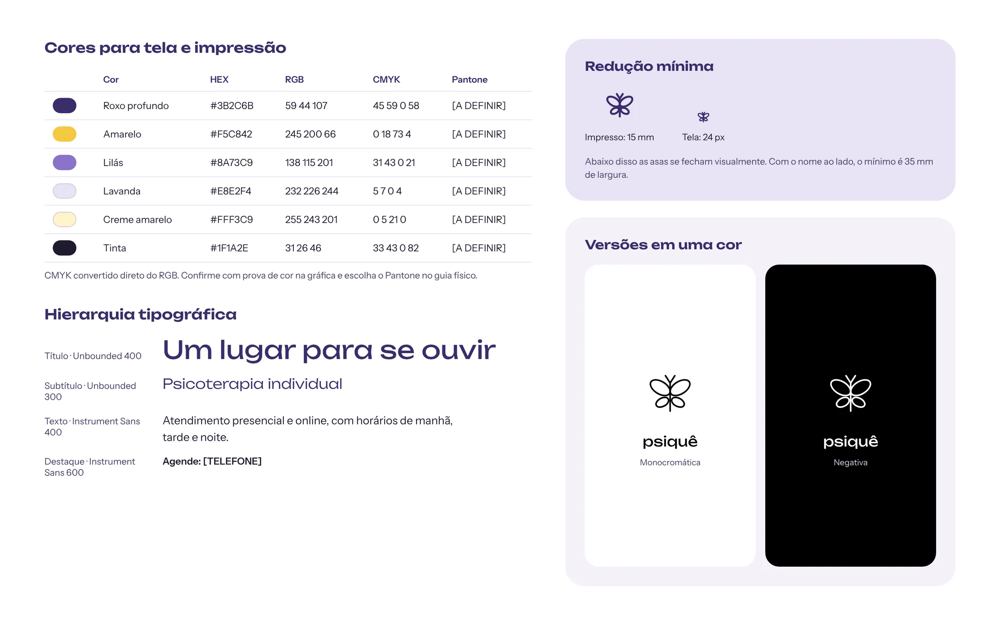
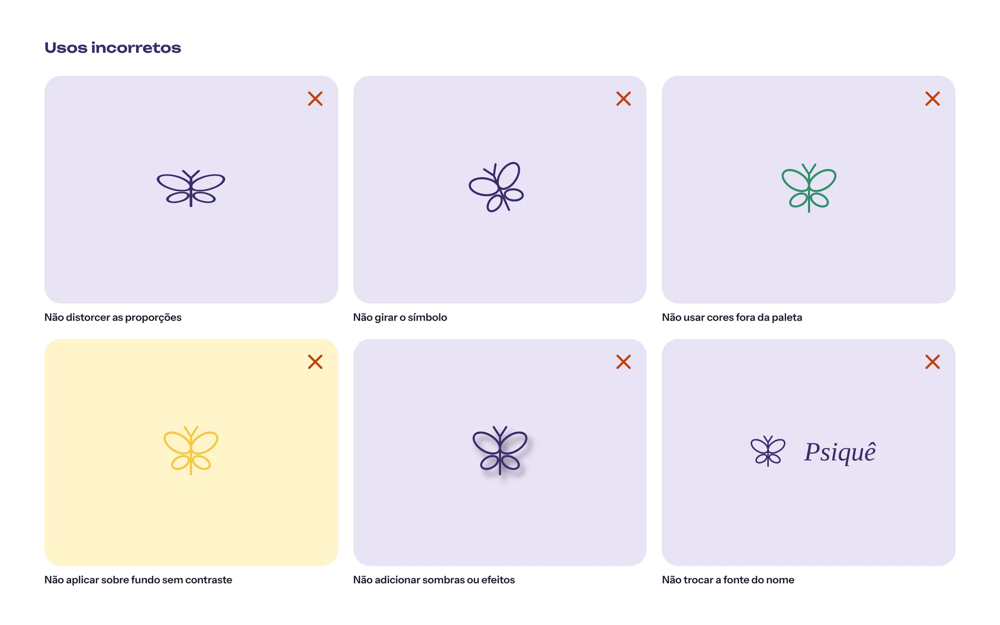

PSIQUÊ
Identidade visual para uma clínica de psicologia: logo, aplicações e manual de identidade.
- Tipo
- Identidade visual
- Papel
- Designer gráfico
- Entregas
- Logo, aplicações e manual
- Pranchas
- 8
Releitura conceitual de um trabalho de identidade visual que fiz para uma cliente, uma clínica de psicologia. Nome, logo e peças foram recriados para o portfólio e não são o material entregue à cliente.
MARCA




APLICAÇÕES








MANUAL DE IDENTIDADE



